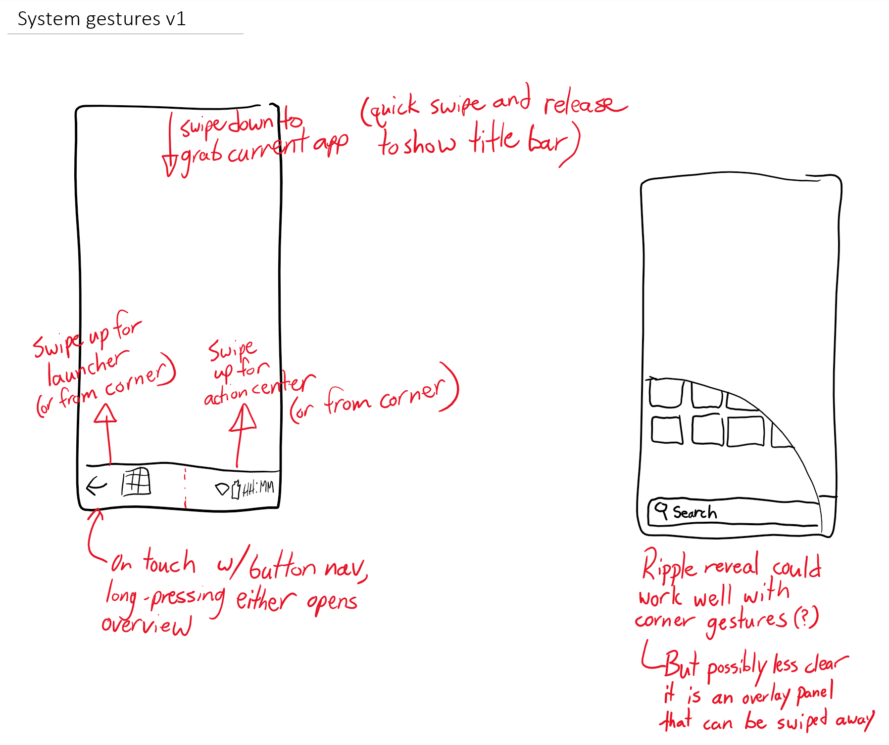
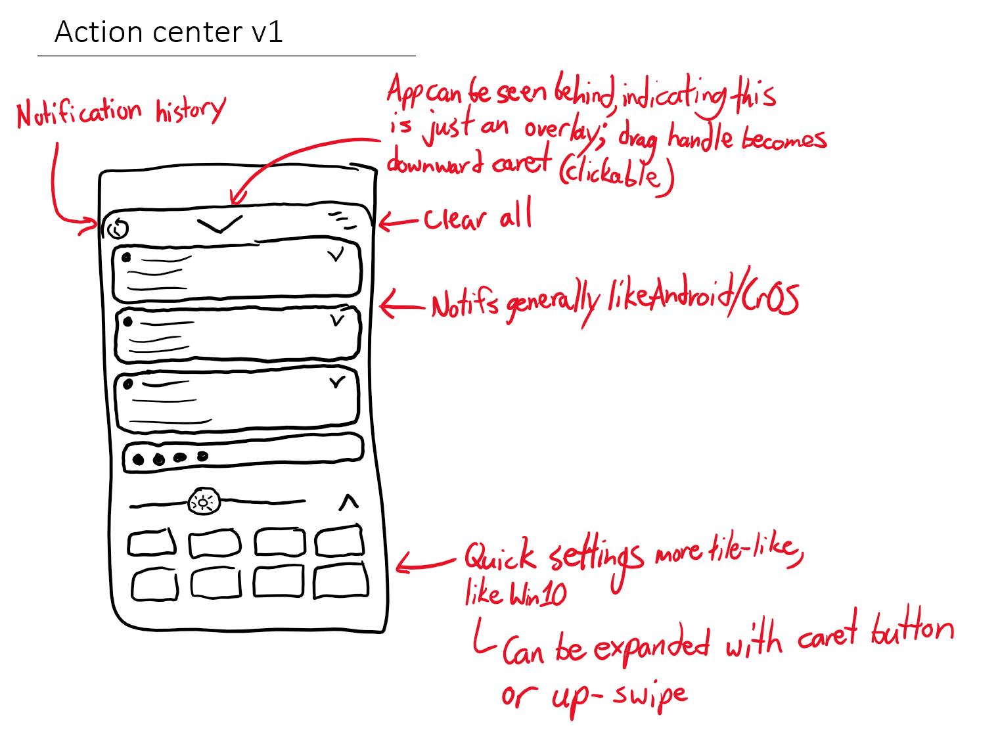
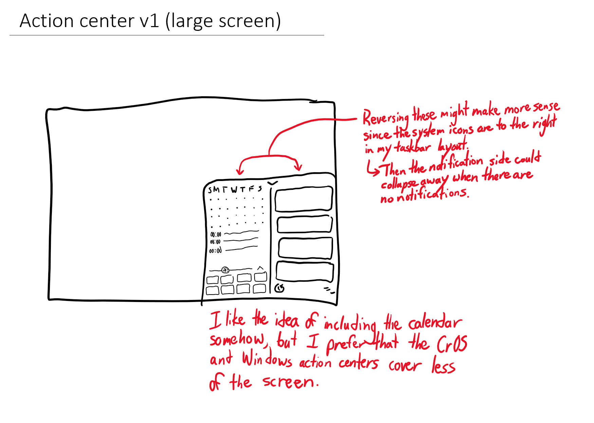
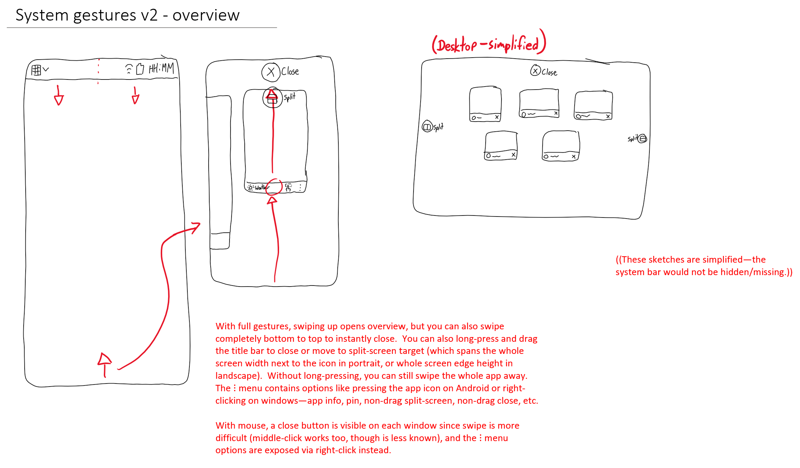
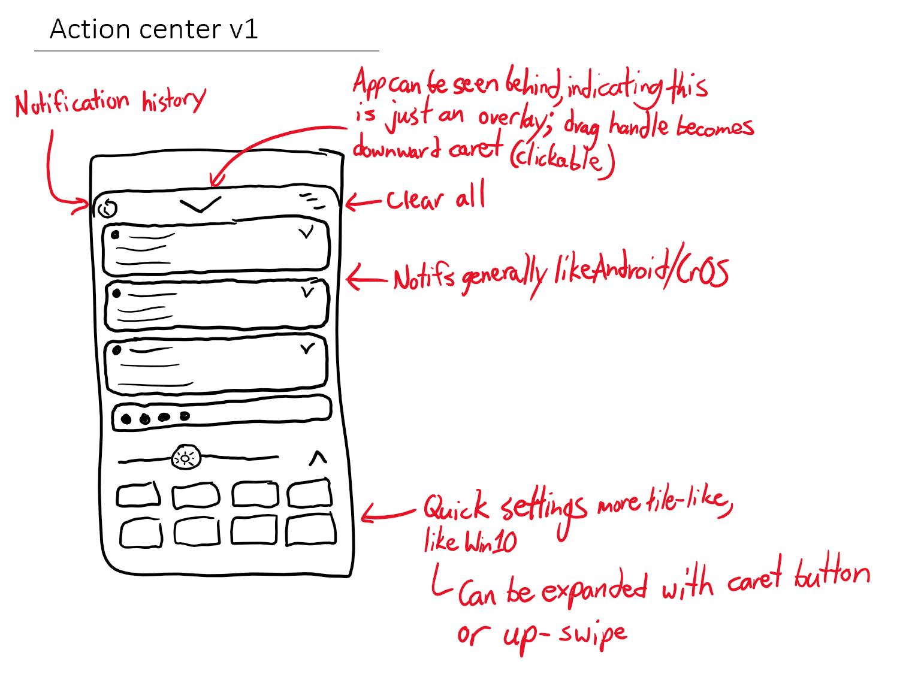
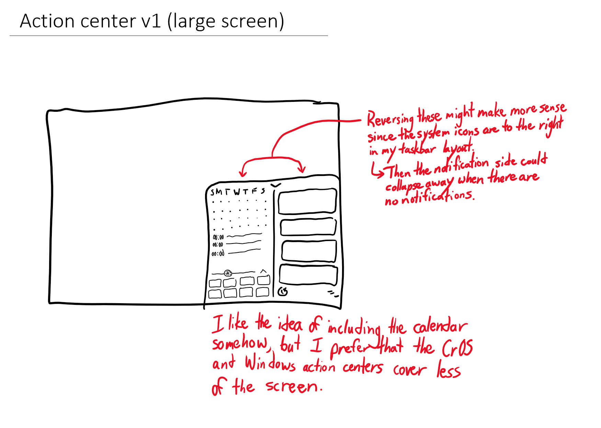
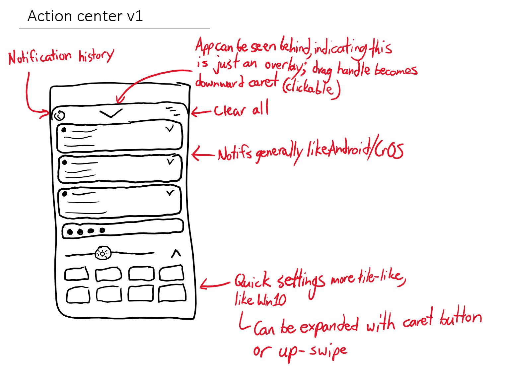
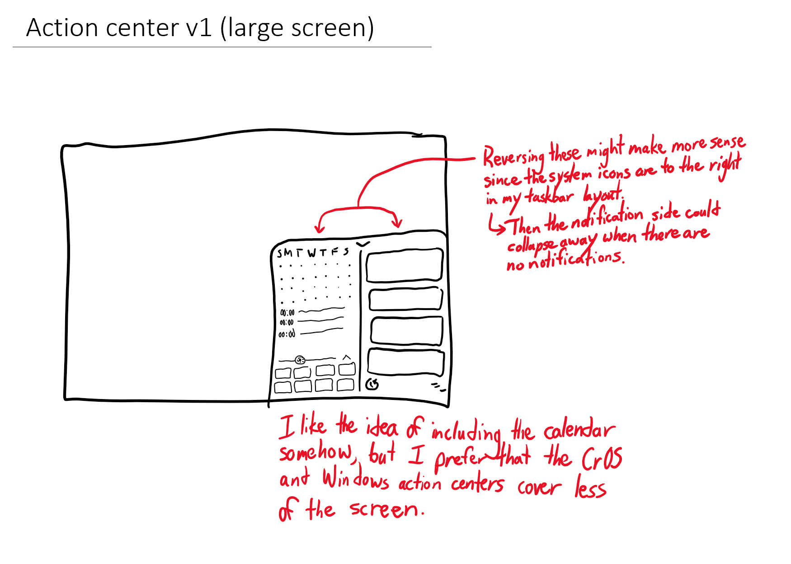
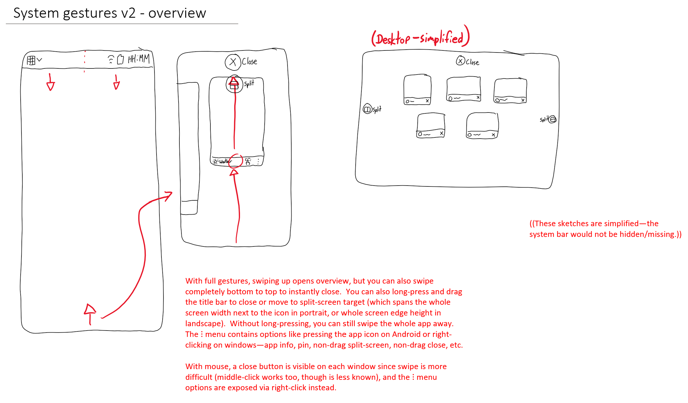
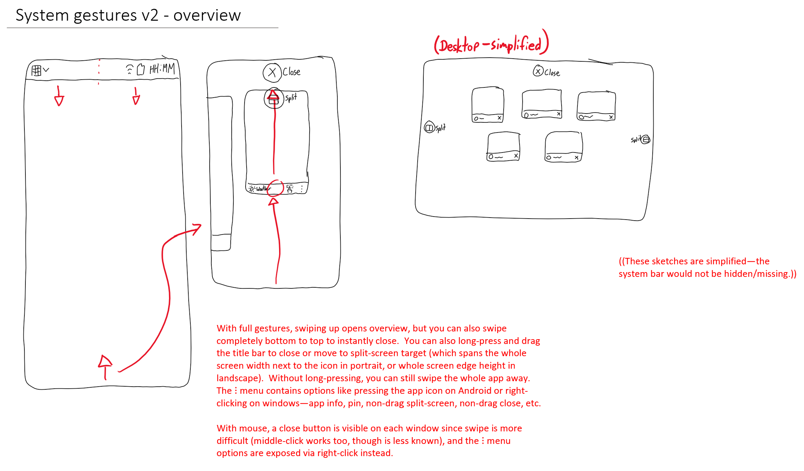

‹ Ideal UX
A desktop environment experience that doesn't exist
(yet?)
Draft sketches




![A sketch titled, Launcher v1. The launcher has tiles like Windows 10, but rounded. Widgets are fit to the same grid and have the same rounded corners. A button at the top-left or a swipe opens the list of all apps. An edit button is at the top-right. A search box with a microphone icon is at the bottom. The voice assistant can be set to auto-activate when the launcher is opened, and hardware keyboard input defaults to typing into the search box unless the focus was already explicitly moved. I am not the biggest fan of forcing icons to all be the same shape, but I like the 2020 Windows approach of giving them a translucent area that they can then fill in if they want with an adaptive icon background.](launcher_v1_light.png) 



![A sketch titled, System gestures v2 - launcher. The status bar is now at the top. Swipe down from the top-left to pull a ripple down that expands into the launcher. I think I prefer the panel being pull out under the system bar to the system bar itself being stretched to become the panel. The latter makes the connection between the two more clear, but the former makes it possible to switch to the notification/QS panel without first closing the launcher. The bottom bar contains window controls, with back and optional forward button at the left, overview button in the middle, and close button at the right.](system_gestures_v2_launcher_light.png) 
